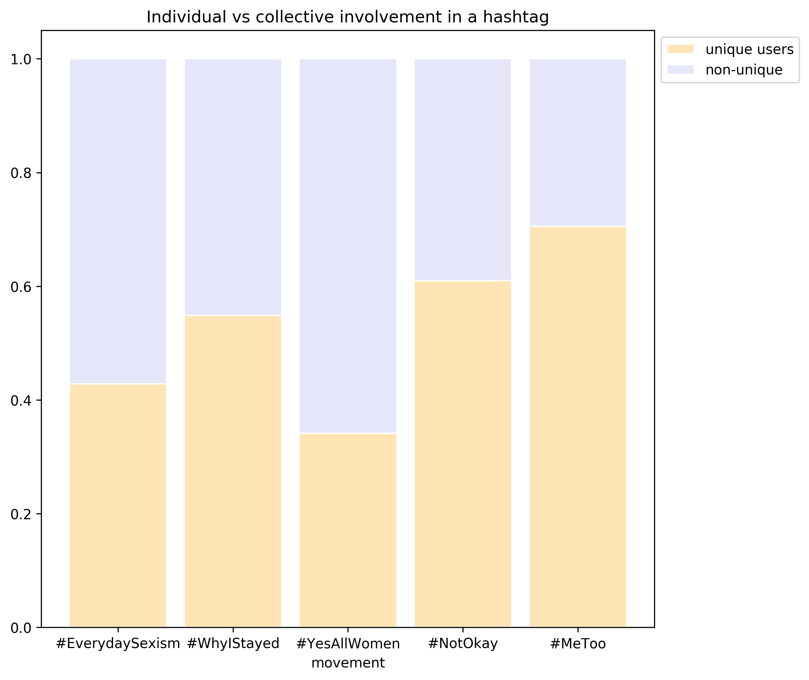

A SUCCINT YET INSIGHTFUL ANALYSIS ON HASHTAGS
This project analyzes the coverage of social movements in Twitter. Twitter allows one to connect with people from all over the world in a short amount of time, creating new ways to participate and support social movement. News appear on twitter before they do in traditional medias like newspapers and the impact and importance of any statement is now measured in how many people retweet it. We study how users see, share and discuss these protests and movements and analyze different trends in three protests:
In 1992, four LA police officers were videotaped beating a black man named Rodney King. Their later acquittal instigated riots, lootings, arsons, and civil disturbances in what is now known as the 1992 Rodney King riots, but these events did not result in a social movement . However, in summer 2013, the death of Trayvon Martin and the acquittal of his killer provoked the birth of Black Lives Matter, a protest that spread throughout all US and is known all over the world. What made the difference between the two events? Social media. Black Lives Matter supposed the consolidation of a new form of protest: Hashtag activism.
On February 26 2012, George Zimmerman, a neighborhood ‘watchperson’ shot and killed 17-year old black teenager Trayvon Martin. More than one year later, in July 2013, the hashtag #BlackLivesMatter was used for the first time in a Facebook post about the acquittal of George Zimmerman. Now, 5 years after the fatal shooting, this hashtag has been used more than 740874 times by 311525 different twitter users.
| Figure 1. Comparison of the number of tweets in #BlackLivesMatter and #AllLiveMatters aggregated by day. |
#BlackLivesMatter movement against police brutality and racism in US consolidated hashtag activism as a new way of protesting in social media. As a response to it, other hashtags supporting the police have appeared: #AllLivesMatter, #BlueLivesMatter, #WhiteLivesMattter, #NYPDLivesMatter and #PoliceLivesMatter. These hashtags have been used 387215 times (almost half less than #BlackLivesMatter) by 166281 users. The most widespread of these hashtags, #AllLivesMatter, was created before this protest, in 2012, and adopted by the people against it.
The popularity of the hashtags on both sides of the protest, which we’ll call #BlackLivesMatter and #AllLivesMatter, grew slowly. As can be observed in Figure 1, which shows the number of tweets of each protest over time, the popularity and importance of the movement did not rise until the summer of 2014. It was prompted by the death, on July 17, of Eric Gardner, who was killed with a chokehold by a police officer in Long Island, New York, prompting the appearance of the hashtag #ICantBreathe; and, especially by the shooting of Michael Brown the 9th of August in Ferguson, Missouri by a white policeman, which resulted in the #Ferguson hashtag.
Despite this, the biggest rise in the use of #BlackLivesMatter occurred in November 2014. On the 22nd 12-year-old Tamir Rice was killed by a police officer while playing with a toy gun in a playground. Two days later, on the 24th, a grand jury decided not to indict the police officer who killed Michael Brown. Protest ensued, combined with a rise on the number of people tweeting the #BlackLivesMatter hashtag and also an increase of the use, though much smaller, of #AllLivesMatter.
The next rise can be found on the 3rd December, when the no indictment in the Gardner case was announced. This resulted again in new protests, but the event that had the biggest impact took place on the 9th of December, when LeBron James, Kobe Bryant and other NBA players wore an #ICantBreathe t-shirt during a game, referring to the Eric Gardner case. In the following days, there were more than 62121 tweets from #BlackLivesMatter. This event also supposed a big rise in #AllLivesMatter tweets, with a significant number of tweets whereas before there were very few. The protests and the agitation continued during the following days and on December 20, two police officers were killed in New York while they were sitting in their patrol car. After these events, even though the number of tweets decremented, both hashtags appeared regularly, with rises due to concrete events, such as the one-year anniversary of the death of Michael Brown; the death of Sandra Bland in police custody, three days after being pulled-over; or the defense of the #BlackLivesMatter protest by Bernie Sanders in the presidential campaign. The most important rise since then, however, was not due to a unique event, but to the deaths of 36 black people in the hands of the police just in March 2015.
Overall, Figure 1 shows that the growth of the use of the #BlackLivesMatter and #AllLivesMatter hasthags has been parallel, but #BlackLivesMatter has a much bigger support, followers and success. In addition, the impact of different events is clear, with rises on the number of tweets on the days following the protests. However, this rise is clearly dependent on the type of event. In three occasions, after the death of Tamir Rice and the no indictments in both the Brown case and the Gardner case, we can see a rise to around 1600 and 100 tweets with #BlackLivesMatter and #AllLivesMatter hashtags, respectively. Nevertheless, the event that marked the bigger number #BlackLivesMatter’s tweets, with 62121 in the following days, and a regular use of #AllLivesMatter, was the NBA match.
The biggest number of tweets for #AllLivesMatter in a day, 15400, was caused by the death of the two police officers in New York. This event did not provoke such a big reaction of the #BlackLivesMatter hashtag, with only 4360 tweets. It is interesting to notice, as well, that the number of tweets after an event related to #AllLivesMatter tends to decay much more rapidly than in those related #BlackLivesMatter, where the rise lasts for several days.
| Table 1. Numbers on the impact of both sides of the protest. |
| #BlackLivesMatter | #AllLivesMatter | |
|---|---|---|
| Number of tweets | 846415 | 387206 |
| Number of users | 342192 | 166280 |
| More frequent languages | English, German, Spanish, French, Italian and Dutch | English, German, Spanish, French, Italian and Dutch |
| Percentage in English | 97% | 96% |
So far, we have assumed that both sides of the protest use different hashtags and that these hashtags are really polarized towards supporting #BlackLivesMatter or the police. Now, we analyze whether this is true by showing which percentage of tweets contained hashtags in support of the police in addition to #BlackLivesMatter aggregated by month.
| Figure 2. Occurence of hashtags in favour and against the protest together aggregated by month. |
Figure 2 shows that only the hashtags #AllLiveMatters, #NYPDLivesMatter and #PoliceLivesMatter were tweeted together with #BlackLivesMatter. The percentage of tweets is non-significant and indicates a great polarization except for #AllLivesMatter, which seems to be a little bit less polarized. It is also important that this polarization grows with time, with a much higher percentage of appearance with #BlackLivesMatter in the first month that drops later.
| Figure 3. Topics in #BlackLivesMatter tweets. A smaller value of relevance on the right slider selects the keywords most repeated for this topic whose overall frequency in all tweets is smaller. |
The tweets in support of #BlackLivesMatter were focused in four ideas in general:
The topics found, usually, use one or two of these ideas and are very closely related to one another. It is interesting to observe how, despite seeming to be a triggering event for the number of tweets, the NBA game does not seem to have had an importance or to have been discussed.
| Figure 4. Topics in #AllLivesMatter tweets. A smaller value of relevance on the right slider selects the keywords most repeated for this topic whose overall frequency in all tweets is smaller. |
On the other hand, the tweets against the protest cover much more heterogeneous topics, with the primary idea being the defense of the police and that their actions were incited and justified. Among the most prominent topics are also racist messages, with keywords like #killallmuslims or ‘terrorist’. However, it should also be noted that the idea of reducing the violence and stopping the hate appears in many of the tweets . Lastly, #AllLivesMatter seems to be also used to defend other causes, like transsexual, abortion and anti-abortion, a reference of this hashtag not being so polarized.
| Table 2. Most repeated words among supporters and detractors of the protest. |
| Most used keywords | ||
|---|---|---|
| #BlackLivesMatter | #BlackLivesMatter, black, police, #icantbreathe, people, #ferguson, justice, #ericgardner, killed, lives |
|
| #AllLivesMatter | #AllLivesMatter, #PoliceLivesMatter, #WhiteLivesMatter, #NYPDLivesMatter, #BlueLivesMatter, #BlackLivesMatter, #nypd, police, people, white |
Regarding the most used words, in Table 2 can be found the ten most common in each side of the protest. In both cases, the most repeated keywords are the hashtags used, while the rest defend their key ideas. It should be noted that for #AllLivesMatter, the hashtag #BlackLivesMatter appears, which indicates again, that it is not so polarized.
The sentiment in a tweet can be classified according to its polarity, that is, the emotion expressed in a sentence, in positive, neutral and negative. Additionally, it can be classified according to its subjectivity in subjective, rational and neutral. Polarity gives an idea of how people react to the events and how it makes them feel, while subjectivity measures whether this reaction is emotional or not.
| Figure 5. Percentage of tweets from #BlackLivesMatter classified as positive, neutral and negative according to their polarity, aggregated by week. |
Figure 5 shows the percentage of tweets classified according to their polarity in #BlackLivesMatter over time, aggregating by week. Most of the tweets are classified as neutral, with similar values between positive and negative. However, in 2016 this trend changes with a predominant number of positive tweets, and stabilizes. This is, probably, because the most active part of the protest, which made it known worldwide, had passed.
The events related to the deaths of black people, e.g. the no indictments in Brown and Gardner cases, have the consequence of the percentage of negative tweets rising and the positive decreasing, because they express feelings of rage and injustice. However, the NBA game and the killing of two police officers have the opposite effect, as the number of positive tweets grows. In contrast, the defense of the protest by Bernie Sanders was followed by a rise of the number of neutral tweets, probably due to not being an event so emotionally charged, which encouraged other people, not involved with the protest, to use the hashtag.
| Figure 6. Percentage of tweets from #BlackLivesMatter classified as rational, neutral and subjective according to their subjectivity, aggregated by week. |
Regarding subjectivity, Figure 6 shows that the majority of the tweets are considered subjective, as one would expect in this type of protest. Rational tweets are around 25% while neutral are around 5% of the total. This changes in the same point as with the polarity plot, in 2016, when rational tweets constitute more than 50% of the total, while subjective are around 40%. This change, as mentioned with polarity, is likely caused by the most active and tense periods of the protest, passing.
In this case, the events related to the death of black people provoke, contrary to what could be expected, a rise in the rationality of tweets, while lowering the percentage of subjective ones. A probable reason is that these events cause more people to tweet about them, including news, whose opinion may not be so polarized. The rest of the events have the opposite effect, incrementing the number of tweets considered as subjective.
| Figure 7. Percentage of tweets from #AllLivesMatter classified as positive, neutral and negative according to their polarity, aggregated by week. |
With #AllLivesMatter we can observe much more variability in the classification according to polarity, shown in Figure 7. The predominant classification is still neutral, followed by positive and then negative, but in this case, there is much more variability. This is probably caused by #AllLivesMatter being more heterogeneous than #BlackLivesMatter, as was also observed with the topics of the tweets. Like before, 2016 constitutes a breaking point, with an increase of positive tweets, though in 2017 they are again surpassed by more neutral messages.
The effect of the events is not as clear as with #BlackLivesMatter. The events related to the deaths of black people tend to result in a rise of neutral tweets, while the NBA game and Bernie Sanders’ defense of the protest seem to increase the number of negative tweets. After the death of the two police officers, instead of an expected increase in the number of negative tweets, the neutral messages raised, probably because a large amount of people who did not usually employ this hashtag tweeted about it.
| Figure 8. Percentage of tweets from #AllLivesMatter classified as rational, neutral and subjective according to their subjectivity, aggregated by week. |
In Figure 8, we can observe that in subjectivity the same trend as with #BlackLivesMatter. Around 75% of the tweets were subjective, with 20% being rational and merely around 5% neutral until 2016, when the rational tweets started to predominate. In this case, the news about no indictment in the Brown and Gardner cases resulted in a rise of the rationality of tweets. Likewise, the NBA game and the death of the two police officers had the opposite effect, with an increment in subjective tweets. The same thing happened with the death of Sandra Bland, which gave place to much speculation.
Overall, it can be concluded in both sides we can observe similar behaviors showing that it is an emotionally charged protest, with a great number of subjective tweets, which are affected by the events.
| Figure 9. Comparison of polarity in #BlackLivesMatter and #AllLivesMatter, aggregated by week. The tweet is negative when polarity < 0, neutral when polarity = 0 and positive when polarity > 0. |
In Figure 9 we can observe a comparison of the polarity in both sides of the protest, with the data aggregated by week. Values smaller than zero indicate that the tweets were considered negative, while bigger than zero indicate positive and exactly zero neutral. The value of this measure is very similar for both #BlackLivesMatter and #AllLivesMatter. It has values close to 0, which indicates that the tweets are only slightly polarized, until 2016, when for both sides the tweets are always considered negative.
The impact of an event in polarity seems to be very similar for both sides of the protest, with a few exceptions: the events in December 2014, when the reaction was positive for #BlackLivesMatter and negative for #AllLivesMatter, and with a smaller difference with the Bernie Sanders defense of #BlackLivesMatter.
| Figure 10. Comparison of subjectivity in #BlackLivesMatter and #AllLivesMatter, aggregated by week. The tweet is rational when subjectivity < 0, neutral when subjectivity = 0 and subjective when subjectivity > 0. |
Figure 10 shows the subjectivity aggregated by week. With subjectivity, 0.5 indicates neutrality, while bigger values show rationality and smaller values subjectivity. Again, the values for both sides of the protest show similar values, with most of the tweets being considered rational. However, in this case they diverge in July 2016, when most tweets are considered neutral for #BlackLivesMatter, while they are still rational for #AllLivesMatter. A possible cause for this divergence is that after the most active period of the protest, the #BlackLivesMatter moved towards neutrality, while the hashtag #AllLivesMatter, as it was also employed in other protests, didn’t have this move.
Regarding specific events, it should be remarked the difference in reaction to the one-year anniversary of the death of Michael Brown in August 2015, which increased the subjective tweets with #BlackLivesMatter, while the subjectivity descended in #AllLivesMatter. The opposite happened with the Bernie Sanders’s declarations, rising subjectivity in #AllLivesMatter. It should be mentioned that even though this event defended #BlackLivesMatter, the emotional response was much bigger among the detractors of the protest than among its supporters, probably as mentioned before, due to encouraging people not involved with the protest, to tweet about it.
These graphs expose clearly the difference between the use of #BlackLivesMatter and #AllLivesMatter. #BlackLivesMatter is a hashtag that was used massively and in relation to a lot of hashtags, which in general are not connected. On the other hand, with #AllLivesMatter one can see clear communities that used each concrete hashtags.
With #BlackLivesMatter, only three different communities can be distinguished. The first one, and most important, is a general community that englobes hashtags whose only connection is the use of #BlackLivesMatter, and that includes hashtags related to this protest (#Ferguson, #ICantBreathe, #SayHerName, #PoliceBrutality, #Justice), to race (#Racism, #CivilRights, #BlackGirlMagic, #BlackCommunity, #latinos), but also to misogyny (#feminism, #WomenMarch) and politics (#Resist, #Obama, #MAGA, #ImpeachTrump). The second one is a community related to Bernie Sanders, with hashtags such as #bernie2016 or #feelthebern, which appeared due to its defense of the protest during the presidential campaign, and that also links to some mass media news (#cnn, #foxnews). Lastly, we can see a community related to Forbes, business and cars, which is due to the fact that Ford foundation is backing a Black Lives Matter fund to give exposure to the movement and that Forbes has a special section talking about this protest.
The number of tweets indicated in this analysis does not include all tweets from this protest, as they were not present in the cluster, but it is a representative sample.
| Figure 1. Comparison of the number of tweets in #Resist and #MAGA aggregated by day. |
In this analysis we will refer to the Trump supporters by their characteristic hashtag #MAGA, and to its detractors by #Resist. We analyze the hashtags hashtags #MAGA and #makeamericagreatagain in support of Trump and #NOTMYPRESIDENT, #TheResistance , #Resist , #TakeAKnee against him. In Figure 1, we can see how the number of tweets of each of these hashtags changed over time in relation to the events.
On June 16, 2016, Trump first announced his candidacy to the presidency of the United States, adopting the hashtags #MAGA and #makeamericagreatagain as his lemmas during the campaign. On the following months, there was a steady number of tweets everyday, with some peaks.
Curiously, instead of gaining support, on the 8th of November 2016, the day of the elections, this number descends, and rises again afterwards. On that same evening, after the announcement of Donald Trump as new president of US, several protests arose and #Resist was born as way of protesting against him and his policies. Over the next months, the number of tweets from #Resist greatly surpassed those of #MAGA, with peaks during the announcement of the investigation of the Russian involvement in the US elections, as well as the Muslim ban, which starting decreasing after Michal Flinn resigned, stabilizing around 1000 tweets.
Around July 2017 the number of tweets supporting Trump started to descend, probably due to the holidays and that there was no need for keep rooting so actively for Trump once he’s president, whereas the number of tweets from #Resist was still stable until it rose again in September 2017 when Trump insulted NFL players who kneeled during the national anthem, provoking the birth of #TakeAKnee.
In Table 1 can be observed some analytics on the success of the protest. It can be observed that the number of tweets is similar in both sides of the protest, despite #Resist starting one year after #MAGA , which indicates that this protest is more successful and has more support. The percentage of different users tweeting is low in both cases, which indicates that there are few users very engaged tweeting supporting #Resist or #MAGA, more than a popular support with people not related with the protest.
| Table 1. Numbers on the success of both sides of the protest. | ||
|---|---|---|
| #MAGA | #Resist | |
| Number of tweets | 654666 | 615926 |
| Number of users | 116637 | 151037 |
| Percentage of tweets that were from different users | 17.8% | 24.5% |
| Figure 2. Occurence of hashtags in favor and against the protest together aggregated by month. |
Here, we study whether #MAGA is used by detractors of Trump to engage with #MAGA supporters. Figure 2 shows that the only of #Resist hashtags that used #MAGA hashtags was #TheResistance. The percentage of tweets who did is not very significant, but still indicates that they probably engaged with #MAGA supporters and criticized Trump using this hashtag.
| Figure 3. Topics in #MAGA tweets. A smaller value of relevance on the right slider selects the keywords most repeated for this topic whose overall frequency in all tweets is smaller. |
In Figure 3 can be found the topics discussed in #MAGA tweets. It can be observed that there seem to be 4 predominant topics, which involve the majority of the tweets, while the rest are only used by a small subset of the tweets. The most used of this topics seems to be pre-elections, and it’s mostly composed of the hashtags used to support him during the campaign, #Trump2016, #MakeAmericaGreatAgain, #TrumpTrain, #NeverHillary, etc. The second topic, on the other hand, has a less defined topic, which seems to be about tweets written or directed to Donald Trump twitter account. On the other hand, the third topic seems to be about mentions from #Resist and other hashtags against Trump and #MAGA. Lastly, we can observe that the fourth topic is about the presidential campaign in Wisconsin concretely.
Overall, it seems that the topics are more centered towards the presidential campaign than towards other discussions after he was elected president.
| Figure 4. Topics in #Resist tweets. A smaller value of relevance on the right slider selects the keywords most repeated for this topic whose overall frequency in all tweets is smaller. |
Figure 4 shows the topics discussed with #Resist. Most of them are very related with only a few distanced from them. The principal topic is away separated from the rest and it’s mostly composed from the hashtags used to attack Trump and ask for his impeachment, #TrumpRussia, #TrumpLeaks, #impeachTrump together with expressions of being angry and calling for protest. The second topic targets specific groups and it probably involves replies and discussion, as several conservative hashtags such as #tlot, #teaparty and #tcot can be found. Lastly, the third more important topic is representative of the cluster of topics and seems to be an answer to Trump declarations, accusing him of lying, of being mental and the wall, with the hashtag #NotMyPresident.
The sentiment in a tweet can be classified according to its polarity, that is, the emotion expressed in a sentence, in positive, neutral and negative. Additionally, it can be classified according to its subjectivity in subjective, rational and neutral.
Polarity gives an idea of how people react to the events and how it makes them feel, while subjectivity measures whether this reaction is emotional or not.
| Figure 4. 5. Percentage of tweets from #MAGA classified as positive, neutral and negative according to their polarity, aggregated by week.| |
Figure 5 shows the percentage of tweets classified according to their polarity in #MAGA. The distribution across the three categories is similar, but it can be observed that most are classified as positive in all the span. Negative tweets, which considering this is in relation to a support in a campaign, can be considered as the people against Trump are at first around 25%, but this rose to 30% after the elections.
Regarding specific events, it can be observed that the positive days for Trump had the effect of a rise in the positive, while the days when he was less successful the opposite happened. For example, with the announcement of the candidacy there was a rise in the number of positive tweets. The day of the elections, probably due to the observed decay in number of tweets, the negative and neutral tweets rose, but they dropped again after the elections. On January 16 2017, after Greenpeace hanged a banner with #Resist written in it, the positivity fell again, but rose again on the next days after the announcement of the Muslim ban, but it drops again after it is rejected. The biggest effect can be observed, however, after Trump insulted NFL players, with a great rise on the number of positive tweets, which probably indicates this idea of being unpatriotic for kneeling during the national anthem was greatly shared among his supporters.
| Figure 6. Percentage of tweets from #MAGA classified as rational, neutral and subjective according to their subjectivity, aggregated by week. |
In Figure 6 can be found the tweets from #MAGA classified according to their subjectivity. Surprisingly, most of the tweets, around 60% are considered rational, while one would expect more being subjective, as the opinion of a person usually is, with 35% being subjective most of the time and just 5% neutral. The subjectivity remains very stable throughout all the time, with very small reactions to events. Two can be remarked:
The day of the elections, where subjectivity rose, probably due to the aforementioned decrease in tweets, after going up again.
After Trump’s insult of NFL players there was a rise in rational tweets, which can probably be justified by the amount of newspapers who probably posted his declarations.
The events of January and February of 2017, despite having great resonance in the news all over the world, did not seem to affect the sentiments present in the tweets.
| Figure 7. Percentage of tweets from #Resist classified as positive, neutral and negative according to their polarity, aggregated by week. |
In Figure 7 can be observed the polarity of #Resist tweets. The polarity is very stable and doesn’t almost change with around 50% of the tweets being positive and 25% neutral and negative. The events have almost no effect at all, with very small changes, were the two most remarkable are:
A rise in the neutral tweets and a descend of the positive after Greenpeace hung, probably because the news talked about #Resist as a protest.
A descend in the positive tweets with the insult to the NFL players from Trump, probably because that supposed the appearance of #TakeAKnee with angry messages against Trump.
| Figure 8. Percentage of tweets from #Resist classified as rational, neutral and subjective according to their subjectivity, aggregated by week. |
The same thing happens with the subjectivity, shown in Figure 8, with stable values of 60% of the tweets being rational, while 35% are subjective and 5% neutral. This numbers also coincide with what was observed with #MAGA tweets. Again, the only remarkable effects of the events are the rise of the subjectivity after the Greenpeace banner and the insult to the NFL players. This last one can be probably due, as mentioned before to an angry reaction to Trump’s declarations.
| Figure 9. Comparison of polarity in #MAGA and #Resist aggregated by week with the median. The tweet is negative when polarity < 0, neutral when polarity = 0 and positive when polarity > 0. |
In Figure 9 is compared the polarity from #MAGA and #Resist tweets, aggregated with the median. As was already mentioned when comparing each side of the protest separately, the sentiments expressed tend to be subdued and close to neutrality. In the first half of the campaign the sentiments were in general positive, but in the second half, from January 2016 onwards these sentiments were much more negative. These sentiments varied more after the elections, with a rise in the polarity with the Muslim ban, and a descend in Trump’s negative events, such as Michael Flinn resignation. Regarding #Resist, there is nothing important to comment, but the already observed stability.
| Figure 10. Comparison of subjectivity in #MAGA and #Resist, aggregated by week with the median. The tweet is rational when subjectivity < 0, neutral when subjectivity = 0 and subjective when subjectivity > 0. |
Figure 10 shows the subjectivity aggregated by week. It can be observed, that while they were big changes during the campaign, most of the time the tweets have a high subjectivity. After the elections, #MAGA and #Resist tweets surprisingly had similar behaviors, with slight rises and drops in the same points. The only important difference can be observed with #TakeAKnee, where #MAGA subjectivity rose and its rationality decreased. In addition, it should be noted than the subjectivity in #Resist tends to be slightly higher.
In the Trump graph we can clearly observe two different communities, which are very connected to one another, one is centered on the #makeamericagreatagain hashtag and seems to be more related to the 2016 Election, with hashtags like #votetrump2016, #trump2016 or #teamtrump. On the other hand, the second community is centered with #MAGA, and seems to be post-elections, with hashtag more diverse, that go from supporting the republican party (#GOP), to Hillary Clinton (#CrookedHillary, #NeverHillary) and to general conservative used hashtags such as #PJNET (Patriot Conservative Network), #TCOT (Top Conservatives On Twitter) and #CCOT (Conservative Christians on Twitter).
With the #Resist graph we can also observe three communities, one separated and referred to the #NFL and #TakeAKnee and the two other to #Resist and are very connected. Of these, two one has #Resist as the center and seems to be focused on asking for the impeachment of Trump for the Russian leaks and calling for protests. The second one has #TheResistance as center, and seems to be less emotional, with #hashtags as #demforce, #notmypresident and references to Trump with the hashtags #trump and #MAGA.
The complete interactive graph can be found in this page
We are looking at 5 movements related to protesting misogyny. Below there are the hashtags along with a brief description of the purpose of the movement:
#EverydaySexism
Laura Bates is the woman behind the #EverydaySexism project, a movement which includes both a website and a Twitter account. The movement started in 2012 but gained popularity one year later. According to its <a href=http://everydaysexism.com/> own website </a>, “The Everyday Sexism Project exists to catalogue instances of sexism experienced on a day to day basis. They might be serious or minor, outrageously offensive or so niggling and normalised that you don’t even feel able to protest.”
#WhyIStayed
On 8th of September 2014, footage of NFL player Ray Rice punching his wife Janay Palmer in a casino elevator is released publicly (the scene took place in February). That triggered the first apparition of #WhyIStayed, when Beverly Golden told her story of why she stayed and encouraged women to share their stories related to why they chose to stay in an abusive relationship as well.
#YesAllWomen
On 23rd of May, Elliot Rodger killed 6 people in Isla Vista, California after a series of mysogynistic videos on his Youtube account. On the day after the event, the hashtag #YesAllWomen was born and became the label under which women shared their experiences with male entitlement.
#NotOkay
The movement #NotOkay emerged as a response to a tape that showed Donald Trump bragging about his ability to get away with groping and kissing women at his leisure. After actress Kelly Oxford tweeted first time with #NotOkay, she encouraged women to share their stories when they were assaulted or harassed, in order to avoid normalization of such mysoginistic behaviour and to show that it is not ok.
#MeToo
This is the most recent of the movements. It sparked on the 16th of October, when actress Alyssa Milano started the #MeToo campaign encouraging women and men to share their stories of sexual harassment in hopes of shedding light on the magnitude of the problem. This happened in the wake of the allegations against film producer and executive Harvey Weinstein for sexual misconduct. Since then, millions of people have used the hashtag to come forward with their experiences, including many celebrities, such as actresses Angelina Jolie and Gwyneth Paltrow. Several other famous people have also been denounced, such as Kevin Spacey or James Toback in a movement that has extended internationally to other languages with hashtags such as #balanceTonPorc and #YoTambien.
| Table 1. Analytics on the different movements. | |||||
| #EverydaySexism | #WhyIStayed | #YesAllWomen | #NotOkay | #MeToo | |
| Number of tweets | 152214 | 21052 | 227728 | 31912 | 57064 |
| Number of users | 65229 | 11553 | 77763 | 19458 | 40242 |
| Percentage of different users | 43% | 55% | 34% | 61% | 71% |
| Dates | 2013-01-01 to 2017-12-09 | 2013-03-07 to 2015-01-09 | 2014-05-25 to 2017-12-09 | 2016-10-08 to 2017-12-08 | 2017-10-15 to now |
In Table 1 can be found some brief analytics of the data that we gathered for each of these hashtags. It is interesting to compare the percentage of tweets that were generated by unique users versus non-unique users. That can tell if the movement is mostly supported by a few active people tweeting about the cause, or if the involvement is more general and spread.
In Figure 1, we can see that ‘#metoo’ has the highest percentage of the unique tweets, which suggests that there a lot of different people sharing their own stories, while ‘#yesallwomen’ seems to have lowest percentage on unique users, which indicates there are a few key people tweeting about this.
This seems to be in line with how personal each movement targets to be, ‘#metoo’ encourages personal stories and targets the individual, which results in a lot of different people telling their own stories, while ‘yesallwomen’ targets the population.
| Figure 2. Comparison of the number of tweets in each of the hashtags. |
On the contrary to the other protests analysed in this work, in this case, this movement is not so defined by the events. In most cases, we can observe that the events in general tend to only have a temporary effect, with the number of tweets being very high in the day it happens, but descending quickly afterwards. This indicates that the events provoke an immediate response, but that there is no active movement in between events posting and trying to keep the movement alive.
With #YesAllWomen and #EverydaySexism, we can see that the movements tend to ‘resurrect’ due to other misogyny related events, such as Women’s March in January 2017, the declaration of Hillary Clinton stating that misogyny played a role in the elections or the Weinstein case and #MeToo. This suggests that these movements still resonate in Twitter nowadays and still have an impact. In addition, it should be noted that they are the ones which, after the initial impact have the bigger number of tweets regularly. This difference in behavior with respect to other movements like #NotOkay and #WhyIStayed may be caused by this movements denouncing misogyny in general, not only sexual harassment or domestic violence; and also, not being so marked by specific events, as the Trump tapes or the footage of Janay Palmer being punched by his husband.
Regarding #MeToo, as it is a very recent event, this observations about resonation cannot be made, but we can see that the hashtag has been very popular over the last two months, with no clear signs of fading away yet and it is, at the moment, the most active of the hashtags .
| Figure 3a.Occurence of tweets of #EverydaySexism with the other hashtags aggregated by month.| |
| Figure 3b.Occurence of tweets of #MeToo with the other hashtags aggregated by month. |
| Figure 3c.Occurence of tweets of #notOK with the other hashtags aggregated by month. |
| Figure 3d.Occurence of tweets of #WhyIStayed with the other hashtags aggregated by month. |
| Figure 3e.Occurence of tweets of #YesAllWomen with the other hashtags aggregated by month. |
In Figures 3a to 3e there can be found the co-occurence of each of the hashtags with each other to see to what degree people tweet about several of these movements. In general, and surprisingly, the movements do not seem to be very related. It can be remarked that despite the fact that tweets from #MeToo do not seem to appear with other movements, some other hashtags, #NotOkay, #YesAllWomen and #EverydaySexism appear in almost 100% of the tweets with #MeToo. Given the number of tweets from these hashtags in the last months, that could probaly be explained if for example supporters of the older movement wanted to spark again the hashtag by using it in correlation with a very trending hashtag.
It should be noted as well that a great number of tweets from #WhyIStayed used the #YesAllWomen hashtag, probably due to the closeness of the triggering events from both movements, and the relation of the victims in #YesAllWomen and of deaths due to domestic violence. This can also be observed with #EverydaySexism and #YesAllWomen, which is probably due to both movements being related to a more general denounce of misogyny, more than being focused in domestic violence or sexual harassment.
| Figure 4 Topic visualization |
We sampled approx 2000 english tweets from each movement and performed an LDA analysis to obtain the most relevant topics. In the interactive plot (linked) there are 50 topics, spread based on similarity (the closer two topics are in the graph, the more similar). This leads us to observe there are three main clusters, one in the top left quarter, one in top center and one in the top right and down right quarters. At a closer inspection, the ones in top-left are mostly related to the #meToo movement and the associated topics, the one in the centre is related to #whyIStayed, while the other cluster encompasses all the other movements. It seems that the character of the #metoo movement is most different to all the others. Another observation is that the most salient terms over all the documents include, naturally, the hashtags themselves. So clicking on those renders the topics in which the term is most relevant in, which can point to identifying the topic that is closest to the movement (i.e. the widest circle). As an example, the #whyILeft movement is distinguishably covered in topic 1, which on a hover renders the main causes and problems this protest is fighting against (i.e.: #domestic violence, #abuse and victim). It is interesting to note also that trump is in top30 salient terms, and relevant for all movements with the exception of #whyIStayed. In fact hovering over Topic 13 points to the fact that trump is very salient in #notOkay and #yesAllWomen, and also in a the hashtag #heforshe.
Regarding polarity, we can notice from Figure 5 that at the beginning, the tweets seem to be equally distributed among positive, negative and neutral. However, around July 2015, the positive tweets start to increase in percentage, which is to be slightly unexpected. There are two aspects that might explain this. First, simply the numbers to represent the degree of positivity in a tweet are not to be trusted fully. An illustrative example is the following tweet, labeled by our algorithm to have polarity 1 (so maximum positivity): ‘Wonderful. Then be prepare for #MeToo hoaxes then’. The irony fails to be detected and the word ‘wonderful’ is taken ad litteram. This example is just making the case to take these results with a grain of salt. On the other hand, we hypothesise that the change in percentages is caused by a potential change in attitude in those who tweet. From anger targeting perpetrators, the attention shifted to empathy and encouragement directed to victims. This is to be validated in a more quantitative manner in future work. Towards the end of the time series, we can notice a reversal between the positive and the negative shares of tweets, that seem to coincide with the #metoo movement, which sparked a lot of rage and anger among communities.
| Figure 5. Polarity |
Concerning subjectivity, depicted in Figure 5, the percentage of neutral tweets is consistently low, as one would expect. Similarly as in the polarity graph, the percentages of rational and subjective tweets begin by being equal, and in April 2015, there start to be more rational tweets than subjective. That would be caused by an evolution of the discourse from a personal story style (like the one supported my #whyIStayed) to a more fact-based tweet, which is more in lign with activist causes. As an example of a tweet with subjectivity rated 0 (so very objective) is “#Indian Income Tax laws grant exemptions on income by virtue of sex of a person i.e, to a woman. #everydaysexism.”.
| Figure 6.Subjectivity |
In this graph the communities formed by each of the hashtags can be clearly observed. The main one is generated by #YesAllWomen, which seems to be the connection among all of them. In this community, we can see a lot of tweets denouncing misogyny in general, with hashtags like #rape, #patriarch, #youoksis, etc. In addition there are also a lot of other hashtags referring to other social movements like #Ferguson or #BringBackOurGirls. Very related to this hashtag can be found a small community with messages dedicated to discuss abortion.
Another of the communities, which surprisingly, does not have many connections, given the impact it is having is about #MeToo and its denounces. On the contrary to what could be expected, no hashtag related to Weinstein or a concrete case can be found. Close to this community, we can find another two. One referred to domestic violence and the #WhyIStayed and #WhyILeft, and another denouncing other sexism and racism in general in the everyday life as well.
Last, separated from the rest, can be found hashtags related to #NotOkay and denouncing Trump and his misogny, with messages anti-trump and asking this to stop. Curiously, neither #Resist nor #TheResistance appear among those hashtags, indicating that this protest did not engage in the denounce of his actitude in this tapes.
This analysis of twitter protests and hashtag activism was developed by Isabela Constantin, Ada Pozo and Keshav Singh for the subject Applied Data Analysis (ADA) at EFPL.
Contact
* Isabela Constantin: isabela.constantin@epfl.ch
* Ada Pozo: ada.pozoperez@epfl.ch
* Keshav Singh: keshav.singh@epfl.ch
The code supporting this project can be found in https://github.com/shaginhekvs/ada_course/tree/master/project.